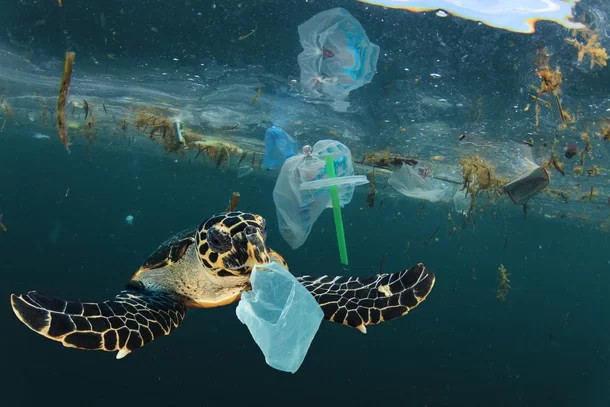
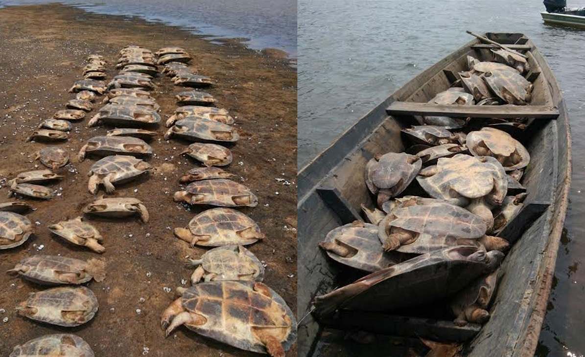
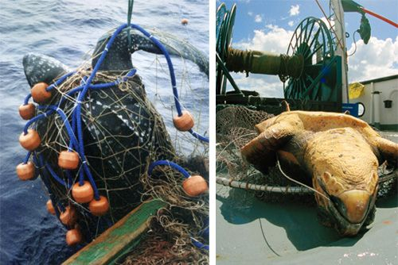

A concientização
As tartarugas marinhas são uma das espécies mais fascinantes do mundo marinho. Infelizmente, muitas dessas criaturas estão em perigo de extinção devido à poluição e à destruição do habitat natural. Como tal, é importante que todos nós tomemos medidas para preservar os oceanos e proteger as tartarugas marinhas.
Poluição:

O lixo nos oceanos é uma grande ameaça para as tartarugas marinhas, causando danos irreparáveis às suas vidas e
aos ecossistemas marinhos em que habitam. Milhões de toneladas de plásticos, redes de pesca abandonadas, produtos
químicos tóxicos e outros detritos são despejados nos oceanos todos os anos, e as tartarugas marinhas são afetadas
diretamente por esse lixo.
As tartarugas marinhas muitas vezes confundem o lixo com alimentos, como águas-vivas ou algas, e acabam
engolindo
sacolas plásticas e outros objetos descartados. Esses objetos bloqueiam o sistema digestivo das tartarugas,
causando a morte por inanição e desnutrição.
Além disso, as tartarugas marinhas podem ficar presas em redes de pesca abandonadas e outros detritos no
oceano.
Esses objetos podem ferir gravemente as tartarugas, causando lesões e infecções que podem levar à morte.
É triste pensar que as tartarugas marinhas são tão vulneráveis aos impactos do lixo no oceano, e que a ação
humana é a principal causa desse problema. É essencial que todos nós trabalhemos juntos para reduzir o lixo nos
oceanos e proteger a vida marinha.
Para ajudar a combater o lixo no oceano e proteger as tartarugas marinhas, podemos adotar algumas práticas
simples. Reduzir o uso de plásticos descartáveis, reciclar, participar de limpezas de praia e apoiar organizações
que trabalham para proteger o meio ambiente são algumas das maneiras que podemos ajudar a proteger essas incríveis
criaturas e garantir um futuro saudável para o ecossistema marinho.
Caça:

Infelizmente, a caça de tartarugas marinhas tem sido uma prática comum em muitas partes do mundo, causando um
impacto devastador na população desses animais. A caça dessas criaturas majestosas é frequentemente realizada por
suas carnes, cascos e ovos, que são considerados iguarias em algumas culturas.
A caça de tartarugas marinhas não só tem um impacto negativo na sobrevivência desses animais, mas também no
ecossistema em que vivem. As tartarugas marinhas são animais importantes para manter o equilíbrio ecológico dos
oceanos, pois ajudam a controlar a população de certas espécies de plantas e animais. Quando uma espécie é
eliminada, as cadeias alimentares ecológicas são afetadas, e todo o ecossistema é prejudicado.
Pesca incidental:

Muitas tartarugas marinhas são mortas acidentalmente em redes de pesca, que são frequentemente deixadas no mar por
longos períodos de tempo sem supervisão adequada. Essas redes, conhecidas como "redes fantasma", continuam a
capturar e matar animais indefinidamente, contribuindo para o declínio da população de tartarugas marinhas.
Infelizmente, a pesca incidental é um grande problema em todo o mundo e está levando à diminuição da população
de tartarugas marinhas. Estima-se que milhares de tartarugas marinhas são mortas a cada ano como resultado da
pesca incidental.
Além disso, muitas das tartarugas capturadas são jovens, que ainda não tiveram a chance de se reproduzir e
contribuir para a população. Com o tempo, isso leva a uma diminuição da população geral de tartarugas marinhas e
pode eventualmente levar à extinção.